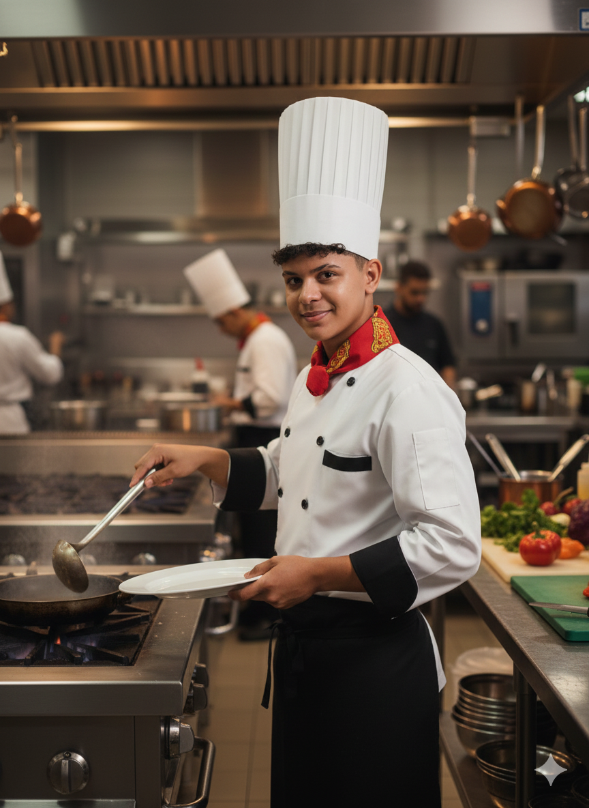
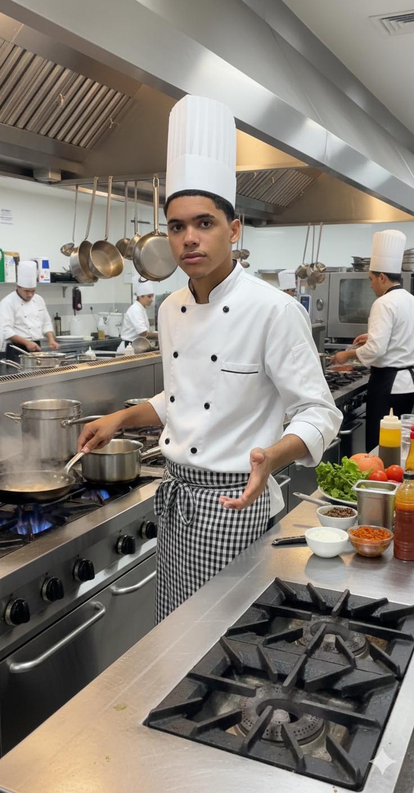

Chefs
Eles transformam a arte dos ingredientes no sabor que chega à sua mesa.

Jonas Bernadino
Chefe Executivo
Jonas Bernadino é o Chefe Executivo com uma carreira de 10 anos marcada pela inovação e excelência. Sua visão estratégica é o motor por trás do crescimento consistente da Brasa Nobre. Antes de assumir a liderança, ele foi fundamental no desenvolvimento do conhecimento de carnes na brasa da empresa. Jonas Bernadino é reconhecido por fomentar uma cultura de colaboração e alto desempenho, garantindo que a Brasa Nobre continue a ser referência no setor.

Cauã Gabriell
Sub-chefe
“Não é o diploma que nos torna grandes, mas os sonhos que não desistimos de perseguir.”

Francisco Bezerra
Chef de Partie
“Sonhar grande dá o mesmo trabalho que sonhar pequeno.”